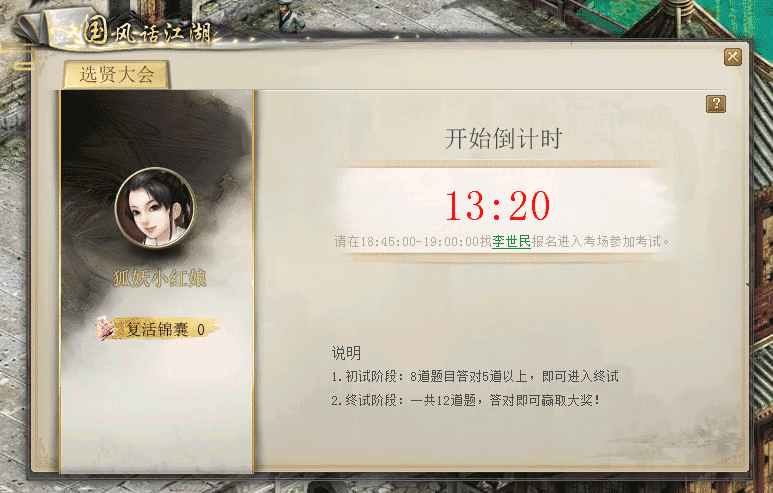
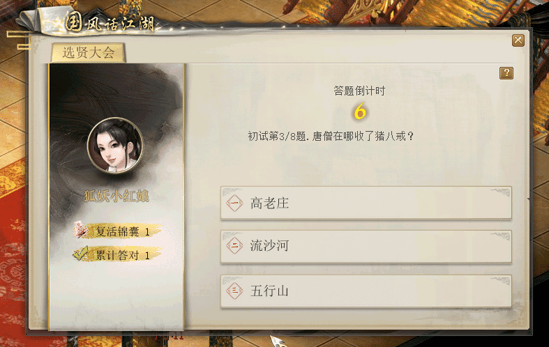
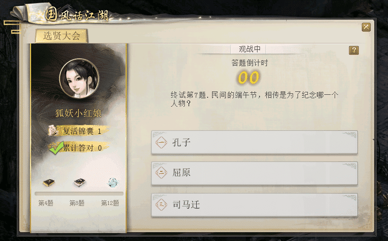

玩法介绍：时值大唐文化宣扬时期，唐王李世民决定对宣扬文化的文人墨客加以褒奖，特召集众士于金銮殿举行集会，以更严格的制度筛选人才。能通过选贤大会层层选拔的人才，将昭告天下，加以重赏。
活动时间：7月20日19点，7月27日19点，共2场
参与条件：≥0转50级且单人
活动NPC：李世民（金銮殿68，40）
1、活动当天18:45-19:00，找李世民（金銮殿68，40）进入金銮殿会场。
2、选贤大会以答题形式选拔人才，题目展示后，有10s时间选择答案，选错或超时者则该题回答错误。
3、大会分为初试和终试两场，初试共8道题，答对5道题即可进入终试，答对后如有剩余题目，可继续作答，获得更多经验奖励。
4、终试共12道题，答错即立刻淘汰不能继续作答；每答对一道题给予经验奖励，答完第4/8/12道题分别可获得一份物品奖励。
5、观看当周的《国风话江湖》综艺视频，可获得一个复活锦囊，用于当周终试答题时自动抵消一次错误答题。
6、未进入金銮殿参与大会的玩家朋友，可以在其他地方通过“国风话江湖”的入口图标，观看选贤大会的答题过程，但是无法参与答题，也无法获得奖励。
7月13日局部测试时将给等级≥0转50级的玩家朋友发放1个复活锦囊用于参与活动。